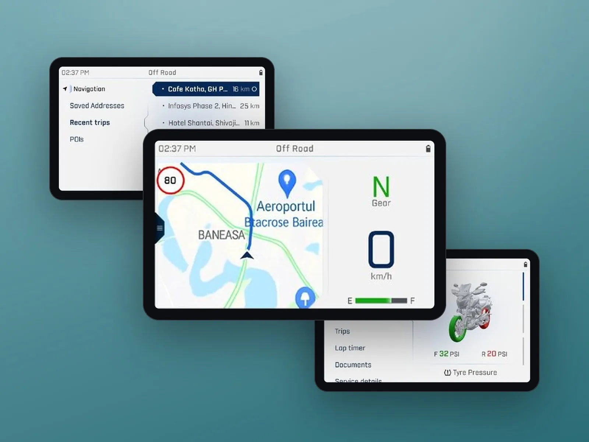
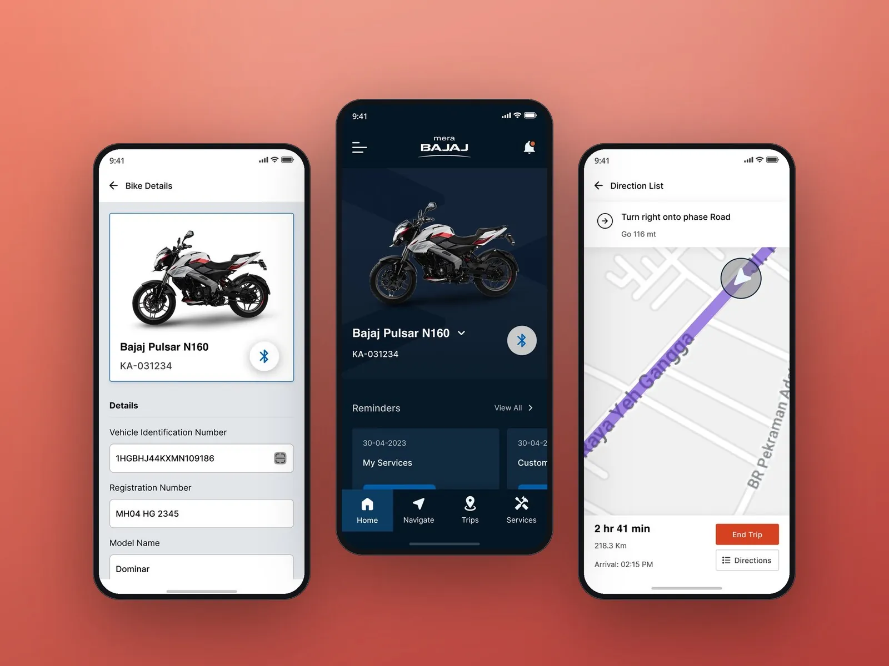
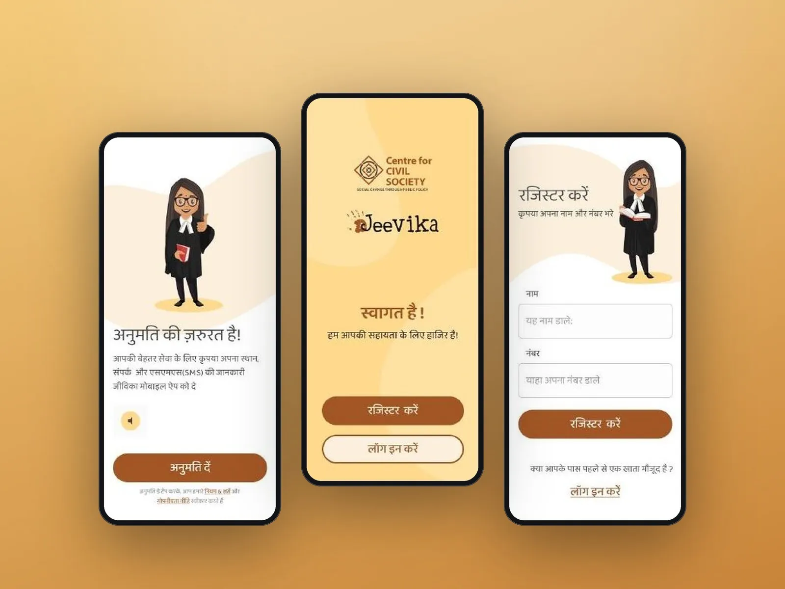
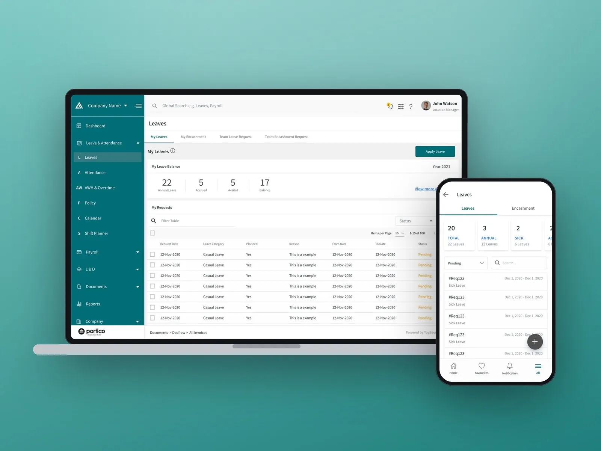
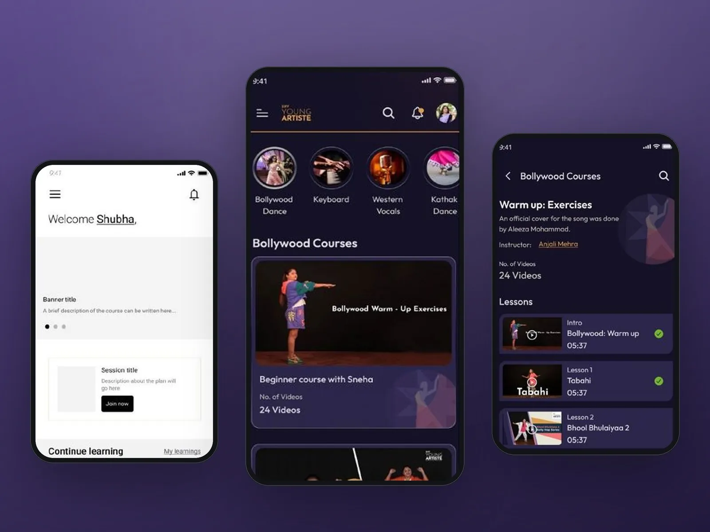
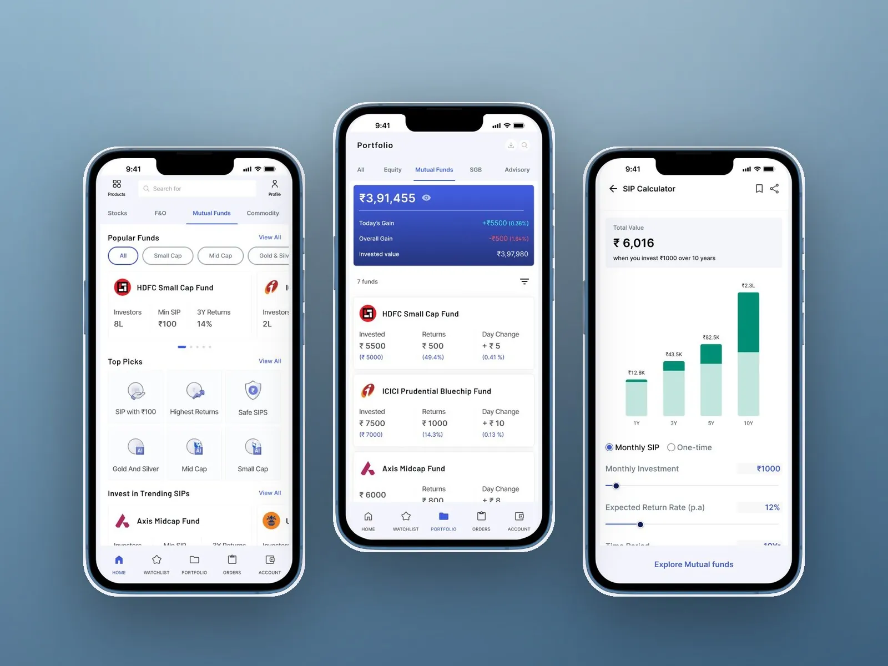
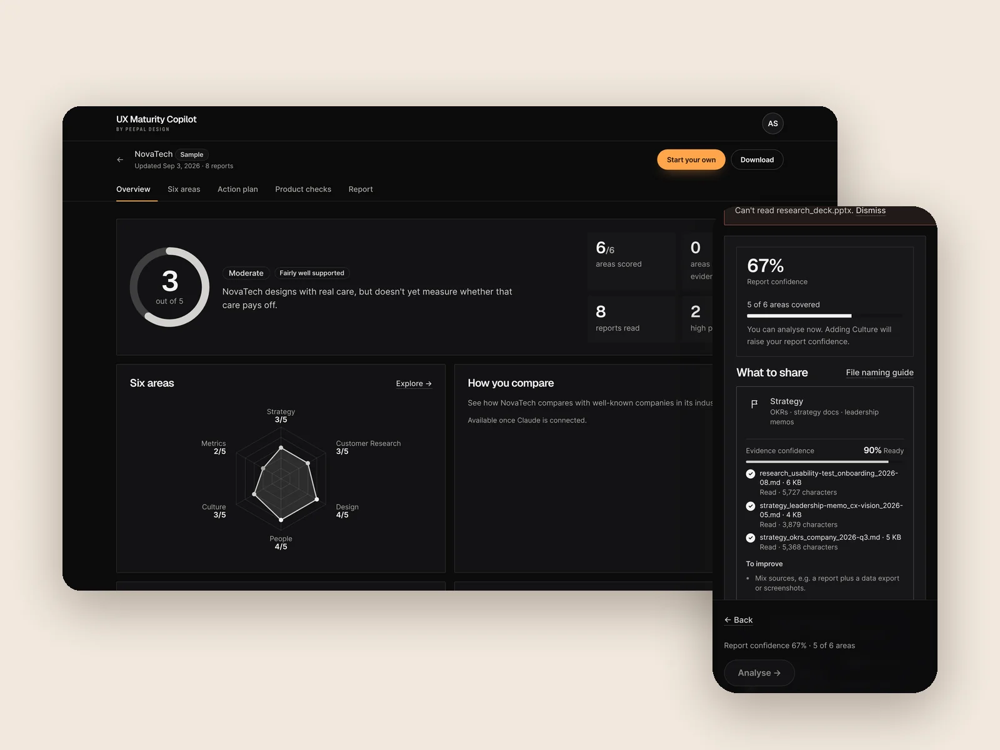

Hi, I’m Azhar Shaikh! I’m a Senior UX Designer at PeepalDesign.
What I bring to every product
Products that ship
Designs engineering can build, and I stay with the developers until they’re live.
Less effort for your users
Redesigns that cut the steps people take to get everyday work done.
End-to-end ownership
I take a product from discovery and research through information architecture, flows and prototypes to handoff.
Clarity in hard contexts
Interfaces for safety-critical, regulated and low-literacy users, built to WCAG.
Systems that scale
Component and pattern libraries that keep a growing product consistent across teams and sites.
Leadership and mentoring
Design critiques, mentoring and sprint planning, plus AI tools that help the whole team deliver faster.
Problems I’ve helped solve

2025Automotive HMI Bajaj TFT cluster Led a team of 4 on the cluster’s information architecture, menus and navigation. Shipped first on the Pulsar N160 SS in 2026. 2024Service marketplace
PockIT
Live with 1,000+ users. Led the customer and technician apps: plain-language booking, upfront pricing and part approvals.
2024Service marketplace
PockIT
Live with 1,000+ users. Led the customer and technician apps: plain-language booking, upfront pricing and part approvals.

2023Mobile application Mera Bajaj Redesigned Bajaj’s owner app for Pulsar riders. 100,000+ downloads, live on both app stores for about two years. 2023Automotive HMI
Chetak EV display
The menu structure and how navigation behaves while riding and when stopped. Shipped on Chetak EV scooters.
2023Automotive HMI
Chetak EV display
The menu structure and how navigation behaves while riding and when stopped. Shipped on Chetak EV scooters.

2022Social impact Jeevika A Hindi-first app and NGO dashboard for low-literacy street vendors, followed by an admin panel. Both are live.
2021B2B SaaS Portico HRMS Turned an organically grown HRMS into a consistent web and mobile SaaS product. 30% fewer steps on core admin tasks.
2022EdTech YoungArtiste A learning app for music, dance and instruments, built around learning paths and motivation. On hold before launch.
2021Fintech Mutual fund module Research-led design of a mutual fund module for new and seasoned investors. Paused before development.
2026Password protectedAI product UX Maturity Copilot Designed and built an AI tool that scores an organisation’s UX maturity from its own documents, and shows how far to trust the result.How I work
I’m not the hero of a project. The problem is, and so is the solution. My job is to keep everyone pointed at both, in four steps I repeat until the problem is solved.
Think
Understand the problem before touching a screen.
What I do
- Stakeholder workshops
- Business requirements (BRD)
- User interviews and personas
- Competitor teardowns
- Functional and user requirements (FRD)
Why: So the team agrees on what we’re solving, for whom, and what success looks like.
Make
Turn what we learned into something people can see and react to.
What I do
- Job stories and user stories
- Information architecture
- Task flows and wireflows
- Wireframes and prototypes
- Visual design and component library
Why: Ideas are cheap to change on paper and expensive to change in code.
Break
Try hard to find where the design fails, before users do.
What I do
- Usability tests with real users
- Reviews with engineering
- Accessibility checks (WCAG)
- Edge cases and error states
Why: Every crack found here is one a user never has to hit.
Repeat
Fix what broke, ship, and keep learning.
What I do
- Iterate on the findings
- Handoff and specs
- Stay with developers until it’s live
- Learn from launch feedback
Why: The first version is never the last one. The problem decides when we’re done.
About Me
My path into design started in engineering. I spent three years at Infosys configuring client networks before moving into UX in 2018, and I still ask an engineer’s questions when I design: what has to work, for whom, and under what constraints.
For the past 8 years I’ve designed products people rely on under pressure: motorcycle clusters read at speed, emergency-care devices used by paramedics, and a Hindi-first app for street vendors with low literacy. Since 2021 I’ve led UX at PeepalDesign for clients including Bajaj Auto and Philips, usually with a small team and a junior designer to mentor.
Lately I’ve been building AI into how design teams work: GapScan, an internal tool that audits products for UX gaps, and Claude and ChatGPT skills my team uses on client work. I also sit on the Board of Studies at Royal Higher Education Society’s College in Thane.
Like what you see?
Let’s Connect!
mazhar.shaikh91@outlook.in · +91 97692 11554 · Mumbai, India